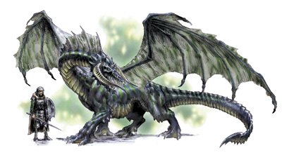
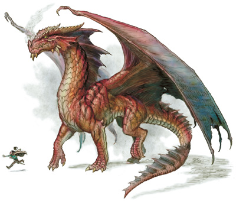
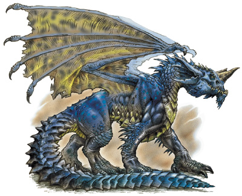
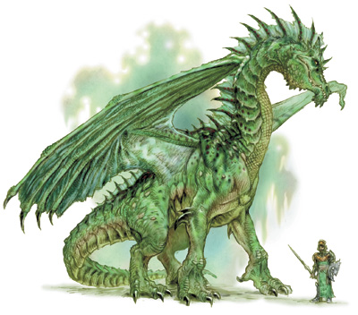
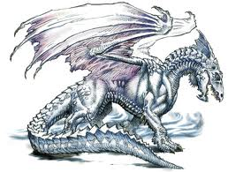

| Home | F.A.Q.s | Theatrical View | Images of Dragons | Bibliography |
There are many different types of dragons. From cruel and vile to cunning and majestic, dragons have inspired, or terrorized, many throughout history. All are a force to be reckoned with. Two of the main kinds of dragons in modern fantasy are metallic dragons, which are good, and chromatic dragons, which are evil. This article will describe different kinds of chromatic dragons—black dragons, red dragons, blue dragons, green dragons, and white dragons. You may also be interested in wyverns, which are dragon-like creatures, and our complete list of dragon species:-
A black dragon can be identified by his grim, skeletal appearance. His eyes lie in deep sockets. His two great horns curve forward and down. The flesh of his face appears to have partially deteriorated, as if burnt by acid. Acidic slime drools from his menacing grin. He smells of rotting vegetation, foul water, and poisonous acid.

Living in sticky, wet habitats, black dragons dine mostly on fish, eels, and other water creatures. They will eat meat, but prefer to allow their victims float in ponds for days, or even weeks, before being eaten.
If you ever encounter a black dragon, be careful—he prefers surprise attacks instead of fair fighting. He is most active in the darkest hour of night, wherein the darkness he feels confident and powerful. He breathes a poisonous, sizzling acid.
A red dragon can be identified by is long wings and two long horns. He has a long, red, forked tongue. Tiny flames often dance in his nostrils when he is angry. His eyes gleam with unrestrained greed when he has seen treasure. He smells of smoke and sulfur.

Red dragons are fiercely territorial. They prefer to eat meat, especially people. Red dragons have been known to force villages to sacrifice maidens to them. (This is a matter of taste. As you would have it, apparently maidens "just taste better.") The best part of a meal for a red dragon is drinking the blood.
Red dragons breathe a deadly fire.
TOP
A blue dragon can be identified by his frilled ears and a single horn upon his head. His eyes are smooth, glossy, and without pupils-when looking at them, you may feel as though you are looking into eternity. The dry scent of ozone and sand follows a blue dragon wherever he goes.
He loves to soar in the hot desert air. He is a dedicated carnivour who will eat snakes, lizards, and occasionally even desert plants, but truly prefers herd animals such as camels. Blue dragons are a real threat to caravans crossing the desert. He prefers to attack people in ambush. Surprise and distance is his greatest ally. They enjoy sitting and reflecting. He is blue-blooded (that is to say, cold, effete, or noble.) He is lawful and has some sense of morals.

He is good at tracking.
The blue dragon is large and vibrant.
Blue dragons breathe lightning, that is, a lightning bolt.
TOP
The green dragon's head is covered in hornlets. He has a long neck and legs, and resembles a brontosaurus.
The green dragon reaks of chlorine.

The green dragon is a liar and master of verbal evasion. Just talking to a green dragon can lead to ruin. When attacking, he will usually stalk his prey first, sometimes for days. The green dragon has a palette for elf flesh. He loves to play with his prey. He will subside on practically anything, including shrubs and small trees. He uses camoflauge to his advantage. He is obsessed with life and growth, and wants to live eternally. He is envious.
He is good at tracking.
The green dragon likes to instill terror in lesser opponents before torturing them to death.
Green dragons breathe poisonous gas, that is, a toxic chlorine gas.
A white dragon can be identified by his sharp, intelligent-looking eyes and intense expression. His scales resemble fur, or even feathers, in places. His wide feet and sharp claws help him to walk atop snowbanks. An aura of coldness seems to eminate from the white dragon.

Living in frosty climes, white dragons prefer their food to be suitably chilled. If their victims have not frozen to death already, white dragons will often pack them away in the snow until they are properly frozen.
If you ever encounter a white dragon, be on your guard— he is swift and alert. Your best bet is to scare or intimidate him, as white dragons are sometimes known to be cowardly. He breathes a chilling frost.